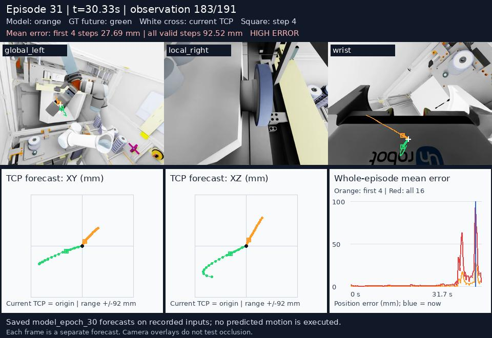

Building on previous object conditioning and OHT action-chunk prediction, this week's work focused on two needs:
Model prediction accuracy: Evaluated model_epoch_30.pth across two complete validation episodes, covering all 405 cached observations. Position errors over the first four predicted steps were:
| Episode | Mean Error | P95 Error | Maximum Error |
|---|---|---|---|
| 17 | 0.91 mm | 2.57 mm | 24.25 mm |
| 31 | 1.58 mm | 7.42 mm | 44.66 mm |
Most predictions were accurate under recorded inputs, with larger deviations concentrated in late trajectory segments. The evaluated model outperformed a stationary baseline on both episodes, while local peaks remained significant.
| Experiment | Key Result | Implication |
|---|---|---|
| GT replay with velocity feedforward | Completed the tested trajectory and reduced tracking errors; fast-motion deviations remained. | Demonstrated improved controller tracking on the tested trajectory. |
| Recursive TCP feedback | Prediction errors accumulated into substantial drift when predicted TCP states were fed back. | Revealed feedback sensitivity requiring validation with consistent live observations. |
Evaluation scope: The prediction table uses independent recorded-input forecasts, without accumulated prediction feedback. Coverage includes every cached observation in the two selected episodes, primarily sampled every 10 raw frames. It does not establish closed-loop task success. The recursive TCP diagnostic keeps images and other robot states recorded, so it is also distinct from a simulator rollout.
Representative prediction analysis — Episode 31
The table above summarizes both evaluated episodes. The figure and video below use Episode 31 as one representative example.
Reading the curves: The XYZ panels show the fourth predicted step in meters; the lower panel shows mean position errors over steps 1, 1–4, and 1–16 in millimeters. The table above reports statistics across individual points in the first four steps. Longer-horizon error peaks therefore need not match the fourth-step XYZ curves or the table maximum.
Full model-prediction visualization — Episode 31
Orange shows the model forecast; green shows the recorded future GT. Thick lines highlight the first four predicted steps, and squares mark step 4. Local XY/XZ panels enlarge the displacement, while the blue cursor tracks episode time on the error chart.
This animation visualizes saved model_epoch_30.pth predictions over recorded camera images. Each observation produces a separate forecast; predicted motion is not executed. It is neither a GT replay recording nor a learned-policy closed-loop execution video.

Download MP4 · Open full GIF animation

Evidence: prediction evaluation · GT tracking comparison · TCP feedback diagnostic · video coverage and provenance.
Use predicted T/R regions to prompt SAM3 in original camera views, then lift masked RGB-D into 3D, fuse views, and transform the points for Relation/Anchor. Compare Internal Slots, prediction-guided SAM3, and Semantic-GT Oracle. The Oracle uses GT-driven prompts; its geometry still comes from SAM3 segmentation and current RGB-D.
Use GT-chunk replay to isolate controller tracking and compare velocity feedforward under the same trajectory and execution settings. Evaluate model predictions independently against future GT, both per step and over the executed prefix H, with a stationary baseline for comparison. Separately test feedback sensitivity by feeding predicted TCP endpoints into subsequent queries while retaining recorded images and other states. Visualize saved predictions against future GT in camera views and local displacement panels.